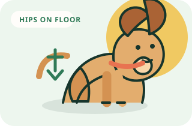
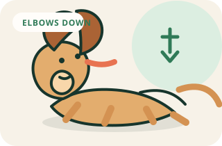
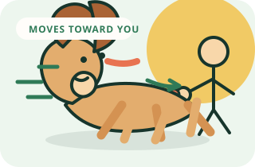
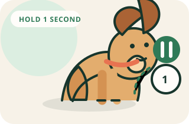
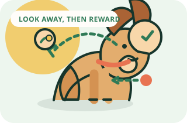
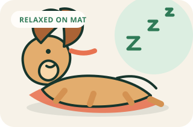
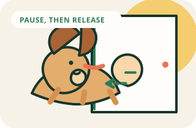
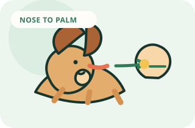
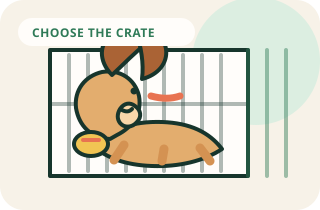
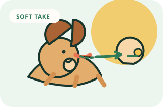

Choose rewards
Try tiny pieces of chicken, cheese, or a favorite treat. Keep a second option for easy practice and higher-value rewards for distractions.
Your first successful week
Set up rewards, learn how to mark the right moment, and run a five-minute session your dog actually enjoys.
Three minutes, one skill, and an easy ending beat a long session every time.
The essentials
These small setup choices prevent most early frustration.
Try tiny pieces of chicken, cheese, or a favorite treat. Keep a second option for easy practice and higher-value rewards for distractions.
Say “Yes” once, then immediately give a treat. Repeat ten times. Your marker will soon mean “that exact moment earned a reward.”
Close doors, move food bowls, and put other pets behind a gate if needed. New learners need an environment where success is likely.
Finish after one easy win, not after the first failure. Put the treats away calmly and let your dog rest.
Simple actions
Pick one card, repeat it three times, and stop while your dog still looks interested.












Keep it accurate: guide with rewards, never push or hold your dog in position, and use one action per session.
The session formula
Use a timer if it helps you stop before attention fades. Your dog’s interest is part of the training plan.
Repeat a skill your dog already knows. Deliver quick, cheerful rewards.
Add only one small challenge: a little more time, distance, or distraction.
Return to a guaranteed win, use your release cue, and end.
Keep it simple
You do not need a shelf of gadgets. Start with gear that is comfortable and lets you reward quickly.
Easy to manage indoors and outdoors. Skip the retractable leash while teaching.
Choose the option your dog wears comfortably without pressure points.
Soft enough to eat quickly. Count part of them within the daily food allowance.
Keeps your hands free and makes reward delivery fast enough to explain the behavior.
A predictable settle spot for calm practice and future relaxation work.
Your first week
Keep the training area quiet and change only one thing at a time.
| Day | Focus | 5-minute assignment |
|---|---|---|
| Day 1 | Attention | Charge your marker word and play the name game. |
| Day 2 | Sit | Lure one sit, mark the moment the hips touch the floor, then reward. |
| Day 3 | Attention | Practice the name game in two different quiet rooms. |
| Day 4 | Sit | Add a hand signal to sit and begin hiding the treat behind your back. |
| Day 5 | Down | Lure a down from sit, then alternate easy sits and downs. |
Use the first two minutes of every session for a quick warm-up. If your dog needs more than a week, repeat the week without adding difficulty.
Stop training and contact a veterinarian or qualified force-free behavior professional if you see pain, sudden behavior changes, severe fear, repeated growling or snapping, bite injuries, or a dog who is not recovering between sessions.